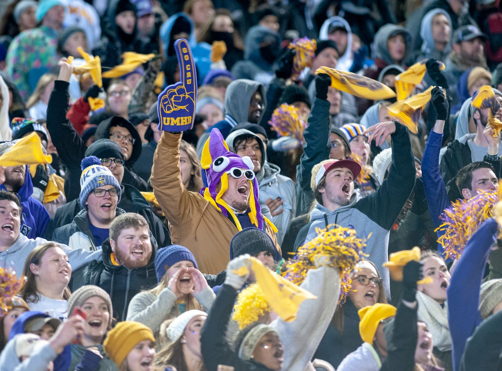

Rays clinch the American League championship
In a high-stakes atmosphere that electrified the stadium, the Tampa Bay Rays secured their place in baseball history. By defeating the Cleveland Guards in a decisive postseason performance, the Rays have proven that their regular-season dominance was no fluke. The victory marks a turning point for the franchise, signaling their arrival as a true powerhouse in the American League.
The game was a masterclass in tactical baseball, with the Rays utilizing their deep bullpen to stifle the Guards' offense in the late innings. Every pitch seemed to carry the weight of the season, and the Rays rose to the occasion when it mattered most. Fans across the country are already buzzing about what this means for the future of the league.
Key highlights from the clinching game included:
The collapse of the Cleveland Guards
For the Cleveland Guards, this loss is a bitter pill to swallow after a grueling postseason run. They entered the series with high expectations, looking to reclaim their former glory, but they ultimately struggled to find consistency against the Rays' disciplined pitching staff. The inability to capitalize on scoring opportunities proved to be their undoing.
Throughout the series, the Guards' hitters seemed to struggle with the breaking balls and high-velocity fastballs thrown by the Tampa Bay rotation. While they showed flashes of brilliance in the early games, the mounting pressure of the ALCS eventually took its toll on their momentum.
We fought hard until the final out, but you have to give credit to a Rays team that simply didn't make mistakes when it counted most.
Looking ahead to the World Series
With the American League crown secured, the spotlight now shifts to the National League and the Milwaukee Crew. The upcoming World Series promises to be one of the most anticipated matchups in recent memory. The Crew brings a different style of play to the table, characterized by power hitting and aggressive base running, which will provide a stark contrast to the Rays' precision-based approach.
Analysts are already debating the potential outcomes of this clash. Will the Rays' pitching depth be enough to neutralize the Crew's heavy hitters, or will Milwaukee's offensive onslaught overwhelm the Tampa Bay defense? The matchup is a classic battle of styles that has baseball enthusiasts around the world on the edge of their seats.
Several factors will determine the outcome of the series:
The impact of the Rays victory
This victory is more than just a win in the record books; it is a validation of the Rays' organizational philosophy. By focusing on data-driven decisions and player development, the team has built a roster capable of competing with the wealthiest franchises in the league. This championship run serves as a blueprint for success in the modern era of baseball.
The momentum generated by this win is expected to carry the team through the World Series. The players have displayed an incredible level of mental toughness, recovering from setbacks and maintaining focus through the most intense moments of the playoffs. This psychological edge could be the deciding factor in their upcoming battle against the Crew.
Final thoughts on the postseason journey
As we prepare for the World Series, it is worth reflecting on the incredible journey the Rays have taken to get here. Their path has not been easy, requiring them to overcome formidable opponents in every round. Every victory has been hard-earned, building the resilience necessary for the ultimate challenge.
To understand how they reached this pinnacle, you can read our previous coverage on how the Rays Defeat Cleveland to Move Closer to World Series at https://dhyey.bond/blog/rays-defeat-cleveland-to-move-closer-to-world-series/. It provides great context on the pivotal moments that led to this historic achievement.
Stay tuned to our blog for more real-time updates, expert analysis, and deep dives into the upcoming World Series showdown between the Rays and the Crew. The road to glory continues, and we will be here to cover every pitch.
See Also
If you enjoyed this Baseball News article, check out Rays Defeat Cleveland to Move Closer to World Series for more useful reading.